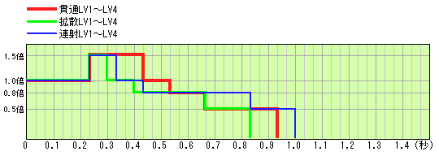

表示本作追加的弓对怪物造成的伤害。
弓伤害计算公式：| ● 武器倍率 | |||||||||||||||||||||||||||||||||||||||||
|
对怪物的攻击造成的伤害计算不是依据状态面板显示的攻击力，而是将攻击力除以一定的倍率后 获得的武器倍率为基准。 各武器的倍率请参考左表。对弓而言是攻击力除以 1.2 。 内部伤害计算全部以武器倍率为基准，面板攻击力的数值为武器倍率×倍率后取整。 因此，弓面板攻击力的增加量为武器倍率增加量的 1.2倍。 |
||||||||||||||||||||||||||||||||||||||||
| ● 箭矢威力 | |||||||||||||||||||||||||||||||||||||||||
|
弓的箭矢分为连射、扩散、贯通３种，各自还有LV1〜LV4的等级之分。 连射： 沿准星方向同时射出1〜４支箭矢。射出的箭矢数随连射等级提高而增加 扩散： 以放射形态射出多支箭矢。射出的箭矢数随扩散等级提高而增加 贯通： 射出具有贯通能力的箭矢。箭矢的命中判定次数随贯通等级提高而增加 弓的种类决定了可发射的箭矢种类/等级。 箭矢种类与等级对应的威力参考左表。 武器倍率与各弹种的威力（以%计算）相乘，就得到了基本威力。 （射出多支箭矢时，每支的威力单独列出） 安装强击瓶时，箭矢的威力提升至 1.5倍。 |
||||||||||||||||||||||||||||||||||||||||
| ● 蓄力阶段的基本威力修正 | |||||||||||||||||||||||||||||||||||||||||
|
同种类/等级的箭矢，基本威力会随着蓄力等级而变化。 左表为蓄力阶段的基本威力倍率。 （蓄力阶段４在装填数UP技能发动时可用） |
||||||||||||||||||||||||||||||||||||||||
| ● 飞行时间的基本威力修正 | |||||||||||||||||||||||||||||||||||||||||
| 箭矢在射出后，威力随时间的变化如下图所示。 | |||||||||||||||||||||||||||||||||||||||||
|  | |||||||||||||||||||||||||||||||||||||||||
| ● 会心率 | |||||||||||||||||||||||||||||||||||||||||
| 弓存在会心率的设定。 会心率表示造成会心一击的概率。会心一击的情况下，基本威力提高至 1.25倍。 心眼、识破+1、识破+2技能发动时，会心率分别有 5％、10％、15％的提升。 会心率为负数的情况下，反过来会有概率造成威力的下降。 发生负会心一击时，基本威力将下降至 0.5倍。 |
|||||||||||||||||||||||||||||||||||||||||
| ● 通常属性的追加伤害 | |||||||||||||||||||||||||||||||||||||||||
|
附带通常属性（火/水/雷/龍/冰）的弓在攻击时，在通常伤害的基础上还会追加属性伤害。 状态面板显示的属性值为实际属性值的10倍。 因此，属性伤害量按照 显示属性值÷10×蓄力倍率 进行计算。 蓄力倍率如左表所示。 |
||||||||||||||||||||||||||||||||||||||||
| ● 状态异常属性瓶的安装 | |||||||||||||||||||||||||||||||||||||||||
|
弓在安装状态异常属性 （毒・麻痹・睡眠） 瓶时，射出的箭矢会附加状态异常属性。 （安装状态异常属性瓶时，弓原本附带的通常属性会被覆盖而无效化） 属性值如左表所示。 射出多支箭矢时，每支都会附带属性值。 发动 状态异常攻击强化 技能时，造成的状态异常属性蓄积值上升至 1.125倍。 此外，蓄力阶段为１时状态异常属性蓄积值减半（状态异常蓄力倍率＝0.5）。 |
||||||||||||||||||||||||||||||||||||||||
| ● 弓的近战攻击 | |||||||||||||||||||||||||||||||||||||||||
|
弓的近战攻击，同时具有“切断”与“打击”的攻击系统，需按照对应肉质分别计算二者的伤害， 以较高值为最终的通常伤害。 近战攻击的威力威力如左表所示。武器倍率与威力（以%计算）相乘，就得到了基本威力。 附带通常属性时也会追加属性伤害。 属性伤害基本威力为 面板显示属性值÷10×0.5 ，即 属性近战倍率=0.5。 安装强击瓶时，近战攻击的威力提升至 1.5倍。 安装状态异常属性瓶时，近战攻击与箭矢一样，原本的通常属性会被覆盖无效化，变为附加状态异常属性。 近战攻击的状态异常属性值固定为 2 ，与其他近战武器不同，每次攻击都会发动。 进行近战攻击时，不会消耗安装的各种瓶。 |
||||||||||||||||||||||||||||||||||||||||
| ● 伤害的状态追加 | |||||||||||||||||||||||||||||||||||||||||
|
怪物在特定的状态下受到攻击时，其伤害根据左表进行追加。 该倍率影响除属性伤害外的其他所有攻击伤害系统。 顺便一提，本作中怪物在麻痹状态下所受伤害会固定增加。 但麻痹陷阱造成的并非麻痹状态而是麻木状态，因此不会增加伤害。 一角龙、角龙由于音爆等效果在地下挣扎的状态不属于落穴状态。 （2006/04/25 追记） 另外经过测试发现睡眠状态似乎不会影响武器伤害（眠斩无用？），只影响部分特殊伤害。 已确认睡眠状态下3倍伤害的来源有：小桶爆弹、小桶爆弹Ｇ、大桶爆弹、大桶爆弹Ｇ、 支给专用大桶爆弹、电击熊爆弹、爆雷针、击龍枪（战斗街&修雷德城）。 大型弩弹、大炮弹、飞空爆弹/飞空爆弹Ｇ伤害不受睡眠状态影响。 据此推测睡眠3倍伤害可能限定为“静态伤害来源”，具体情况仍需进一步研究。 （2024/03/15 追记） 进一步测试发现状态追加倍率可能因怪物而异，例如角龙/一角龙在麻痹测试中未检测到状态追加倍率…… 对所有怪物进行状态追加倍率测试可能较为困难…… （2024/03/16 追记） |
||||||||||||||||||||||||||||||||||||||||
| ● 肉质与全体防御率对伤害的减轻 | |||||||||||||||||||||||||||||||||||||||||
| 根据到此为止的计算结果，计算对怪物的粗伤害， 要考虑到怪物存在肉质的设定，通常会减轻受到的伤害。 弓的通常伤害、属性伤害都会受到肉质影响。 减轻程度因不同的怪物部位而异。详情参考 怪物数据 中肉质相关项目。 弓射出的箭矢全部按照“弹”系统进行肉质计算。 根据肉质对伤害的影响计算通常伤害与属性伤害合计得到粗伤害后，要得到最终对怪物的总伤害， 还要考虑怪物在肉质以外还有着全体防御率的设定。 全体防御率在单机模式下几乎均为100％（即吸收100%粗伤害，不发生减轻），但在联机模式下以及 上位等级时会逐渐降低，进一步提高减轻程度，降低受到的总伤害值。 怪物在愤怒状态下，全体防御率还会降低至约 5/6，进一步减轻所受伤害。 （具体是否降低与降低程度因怪物而异） |
|||||||||||||||||||||||||||||||||||||||||
| ● 玩家的攻击力提升 | |||||||||||||||||||||||||||||||||||||||||
|
提升玩家攻击力的手段多种多样，大体可分为4个类别。 １：攻击力UP、火场怪力+2技能效果的发动、持有提升攻击力的特殊道具（力之护符・力之爪） ２：料理效果、鬼人药/鬼人弹・鬼人药Ｇ的使用 ３：鬼人笛・怪力之种・怪力药丸的使用 ４：狩猎笛旋律效果（参考 狩猎笛旋律一览） 类别１在任务中即使力尽倒地效果也不会消失。 类别２在任务中的效果会由于力尽倒地而消失。 类别３、４为限时效果，经过一定的时间后消失。 对武器倍率的提升量如左表所示。 类别２、３、４各组内的效果无法重复叠加，每组只能存在1个。 发生重复的场合下，类别２以同组内提升效果更高者优先，类别３则是新效果覆盖旧效果， 类别４以同组内等级更高者优先，表格中效果等级为升序排列。 例如，在料理效果增加5点武器倍率的状态下使用鬼人药，武器倍率的提升量仍然是+5。 但是，在料理效果增加3点武器倍率的状态下使用鬼人药Ｇ，武器倍率的提升量将变为+5。 使用怪力药丸增加25点武器倍率后使用怪力种子，武器倍率的提升量将变为+10。 在玩家A的笛旋律攻击大（x1.15）效果即将结束时，玩家B吹奏笛旋律攻击小+进一步强化（x1.15）， 不会更新提升效果，攻击提升将在A效果结束时消失，B效果不会生效。 相反，玩家B吹奏笛旋律攻击小+进一步强化（x1.15）的效果即将结束时，玩家A吹奏笛旋律攻击大（x1.15），此时A效果将立即覆盖B效果，并更新持续时间为60秒。 注：太刀满练气槽触发的武器倍率提升量等同于怪力药丸，属类别３，持续时间至练气槽自然下降（30秒）。 |
||||||||||||||||||||||||||||||||||||||||